Episodes of care and Readmission
2023-08-15
epicare_and_readmission.RmdIntroduction
This vignette contains detailed information about two functions that
are closely related to each other: episodes_of_care() and
readmission(). The episodes_of_care function
is used in the readmission calculations in order to avoid
that encounters that are linked via transfers (i.e., are part of the
same episode of care) are counted as readmissions. The definitions used
in both functions are based on CIHI guidelines for readmission
calculations (see here).
episodes_of_care()
The function episodes_of_care() links
together hospitalizations with acute care transfers into unique episodes
of care. For each hospitalization (genc_id), the function
returns the corresponding: patient_id_hashed,
time_to_next_admission,
time_since_last_admission, AT_in_coded,
AT_out_coded, AT_in_occurred,
AT_out_occurred, epicare.
Coded Transfers (AT_in_coded, AT_out_occurred): A coded acute care transfer refers to hospital coding of acute care transfers based on the DAD Institution From and Institution To fields. Specifically, a hospitalization has a coded transfer-in
AT_in_coded==T, ifinstitution_from_type=='AT'oracute_transfer_in=='AT', vice versa for coded transfer out.Occurred Transfers (AT_in_occurred, AT_out_occurred): An acute care transfer is assumed to have occurred (
AT_in_occurred==T,AT_out_occurred==T) if either of the following criteria are met:
- An admission to a medical or intensive care service at a GEMINI hospital within 7 hours after discharge from another GEMINI hospital, regardless of whether the transfer is coded by hospital.
- An admission to a medical or intensive care service at a GEMINI hospital within 7-12 hours after discharge from another GEMINI hospital, and at least 1 hospital has coded the transfer.
-
Episode of Care (epicare): An episode of
care refers to all contiguous inpatient hospitalizations admitted to any
medical or intensive care service within the GEMINI network. Contiguous
inpatient hospitalizations are defined based on occurred transfers
(
AT_in_occurred==TorAT_out_occurred==T). Episodes involving inter-facility transfers are linked regardless of diagnosis. By default, episodes of care are computed on all hospitalizations in theadmdadtable. See Section 3.4 and function documentation for options to compute epicare using a user specified cohort.
The flowchart below shows how epicares are built:
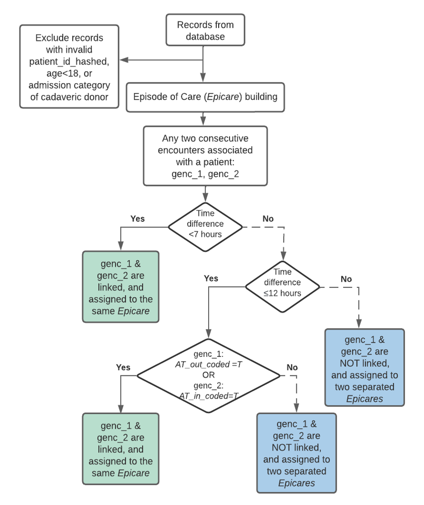
Example output of
episodes_of_care(db)(mock data for illustration purposes, not real data):
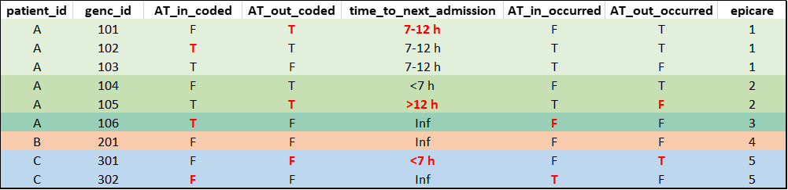
readmission()
The function readmission() computes
whether or not a patient associated with an epicare was readmitted to a
GEMINI hospital within a specified time window. For each hospitalization
(genc_id), the function returns its corresponding:
AT_in_occurred, AT_out_occurred,
epicare, and readmitX. readmitX
is a boolean variable denoting whether readmission took place during a
time window X-days post-discharge.
It is important to realize that readmission is determined by looking
forward into data in the future. Therefore, readmitX is a
measurement of quality of care of the current episode and evaluates
whether factors in the current episode LEAD to
readmission in the future.
For episodes of care involving acute care transfers, readmissions are
attributed to the LAST hospitalization from which the
patient was discharged before readmission; namely only the last
genc_id of an episode have readmitX assigned,
the rest are set to NA.
By default, all records in the admdad table are used to
calculate readmission. See Section
3.4 and function documentation for options to compute
readmission on a user specified cohort.
Mock example output of
readmission(db)(mock data for illustration purposes, not real data. patient_id added to facilitate interpretation):
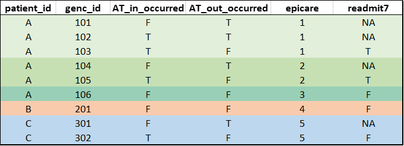
General readmission rate calculation
- Denominator of Readmission Rate: Total number of episodes with potential to be readmitted. There are various conditions where episodes are removed from the denominator. For example, episodes discharged as death cannot be readmitted, are therefore, removed from the denominator of readmission rate calculation (see details in Section 2 CIHI flags).
An episode is removed from the Denominator by setting
readmitX = NAfor the current episode.
- Numerator of Readmission Rate: Number of episodes within the denominator that were actually readmitted within the time window of interest. There are various conditions where episodes are removed from the numerator. For example, elective admissions might not be considered as readmissions, and therefore, episodes with elective admissions are removed from the numerator (see details in Section 2 CIHI flags).
An episode is removed from the Numerator by setting
readmitX = Ffor the preceding episode.
The example code below shows how to calculate 7-day readmission rate
properly using default settings. It is important to note the presence of
NAs in the returned readmitX variable and remember to
exclude NAs when calculating readmission rates:
# Load necessary libraries:
library(RPostgreSQL)
library(DBI)
library(getPass)
# Establish database connection
db <- DBI::dbConnect(drv,
dbname = "db",
host = "172.XX.XX.XXX",
port = 1234,
user = getPass("Enter user:"))
# Run default readmission calculation (with elective_admit=T and death=T)
readm <- readmission(db)
# Compute readmission rate based on readmission output
denominator <- sum( !is.na( readm$readmit7 ) )
numerator <- sum( readm$readmit7, na.rm=T )
readmission_7d_derived <- numerator/denominator
# Compute readmission rate based on readmission output (Alternative)
readmission_7d_derived <- mean( readm$readmit7, na.rm=T ) GEMINI specific considerations
1. Readmission attribution when end of episode is unknown
When the last hospitalization of an epicare has transfer out coded (
AT_out_coded==T) andtime_to_next_admissionis greater than 12 hours or infinite, it suggests that the patient likely had been transferred to a hospital outside of the GEMINI network. It cannot be known for certain that the last hospitalization in our records is the last hospitalization of the epicare in reality.To avoid inaccurate attribution of potential readmission, such epicares are excluded from the denominator (
readmitX=NA) of readmission calculation .-
The rationales are:
- Not all hospitals/medical subservices are in GEMINI network
- Transfers coded by hospitals are typically true transfers rather than errors.
Hypothetical example of special readmission attribution (compare colored entries in genc_id 103 vs 301, and genc_id 105 vs 201, and see how readmit7 is affected):
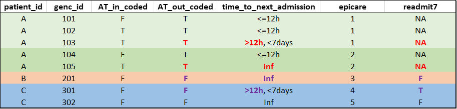
2. Buffer period based on each hospital’s data availability {#sectionBuffer}
A patient needs to be discharged from hospital before appearing in GEMINI database. If a patient was readmitted to a hospital but has not yet been discharged by the time data is transferred to GEMINI, that readmission record will not be captured in our database. As a result, readmission rates could be underestimated in the time period before the latest data transfers.
To mitigate this bias, a buffer period based on data availability of each hospital is applied to the readmission calculation. If an episode’s discharge time is in the buffer period, the epicare is excluded from the denominator (
readmitX=NA) of readmission rates.
Buffer Period =
[ (Hospital’s last discharge date - Readmission window - Additional 30 days)
, (Hospital’s last discharge date) ]
- The rationales are:
- The X number of days specified by the readmission window must have passed to allow for X-day readmission to occur;
- 95% of hospital admissions are discharged within 30 days based on GEMINI data. Therefore, for patients discharged within the buffer period, there is not enough time for readmission to happen and appear in our database;
- Since the buffer period is determined by each hospital’s data availability, there is a possibility of inter-hospital biases that cannot be addressed. While we strive to minimize potential biases, we recognize that complete elimination may not be feasible.
Hypothetical example of how buffer period affects 7-day readmission of a patient:
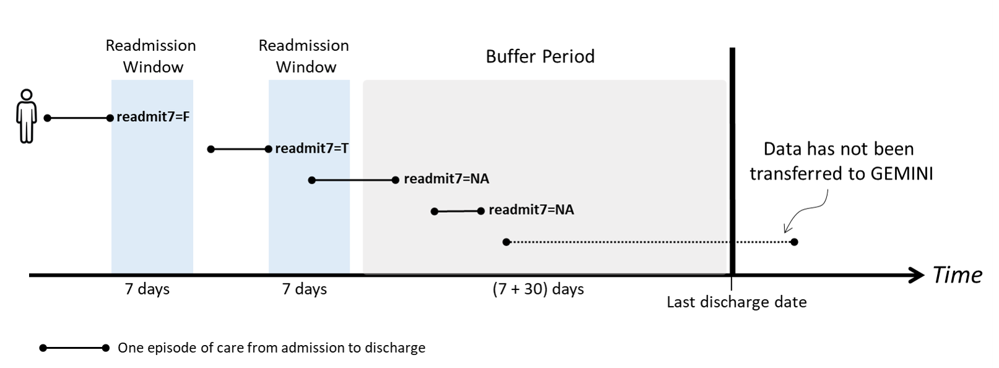
Customizable features
CIHI flags: see Section 2 CIHI flags.
Readmission time window: By default, the
readmission()function computes 7-day and 30-day readmission rates. Users have the option to specify a customized time window using thereadm_winargument. We recommend to exercise caution when customizing the readmission window, see Section 3.3 for details.Restricted cohort: By default, readmissions are determined by searching all the data in the database. There may be scenarios where users want to determine readmissions only among records within a restricted cohort. Both the
episodes_of_care()andreadmission()functions allow users to input a customized cohort using therestricted_cohortargument. We recommend to exercise caution when a restricted cohort is used, see Section 3.4 for details.
Readmission: CIHI flags
CIHI readmission rate calculation
There are total 8 CIHI flags as function input arguments:
elective_admit,death,MAID,palliative,chemo,mental,obstetric,signout. Each flag removes episodes using different criteria when activated. More details on inclusion and exclusion criteria are discussed inCIHI flags sectionbelow and the CIHI website-
Rationale for default definition and readmission rate per CIHI definition
- We only explain those two definitions as below since default definition is GEMINI-specific, and CIHI definition is used in MPR/OPR
- Any other combinations of flags are potentially suitable for different project needs
-
Default definition: the
elective_admitflag and thedeathflag are default to TRUE in the readmission function. If users set them to FALSE, warning messages will be displayed. The remaining six flags are default to FALSE.- Elective admission is excluded since it’s planned. Thus, the corresponding episode of care is ineligible for readmission calculations and is therefore removed from the denominator.
- It’s impossible for an episode of care which ends in death to be followed by a readmission, thus, the corresponding episode of care is ineligible for readmission calculations and is therefore removed from the denominator.
-
CIHI definition: To compute readmission rate adhering to the CIHI definition, ALL 8 flags need to be set to TRUE.
- The main purpose of having 8 flags in design is to match CIHI definition, however, we have come up with potential rationale under the corresponding flag sections for your reference
- Detailed flag definitions can be found below (or in the comments in
readmission.Rscript)
res <- readmission (db, elective_admit=T, death=T, MAID = T, palliative=T, chemo=T, mental=T, obstetric = T, signout = T)
readmission_7d_derived_cihi = mean( res$readmit7, na.rm=T)
readmission_30d_derived_cihi = mean( res$readmit30, na.rm=T)Overview of numerator & denominator removal by flag
There are 8 CIHI flags, each of which can be set to TRUE or FALSE. Elective admission and death flags are active by default. Activating a given flag (e.g., chemo and/or self sign-out flag) results in removal from numerator and/or denominator as illustrated in the flow chart below. Note that some flags (mental & palliative) result in the removal from both numerator and denominator:
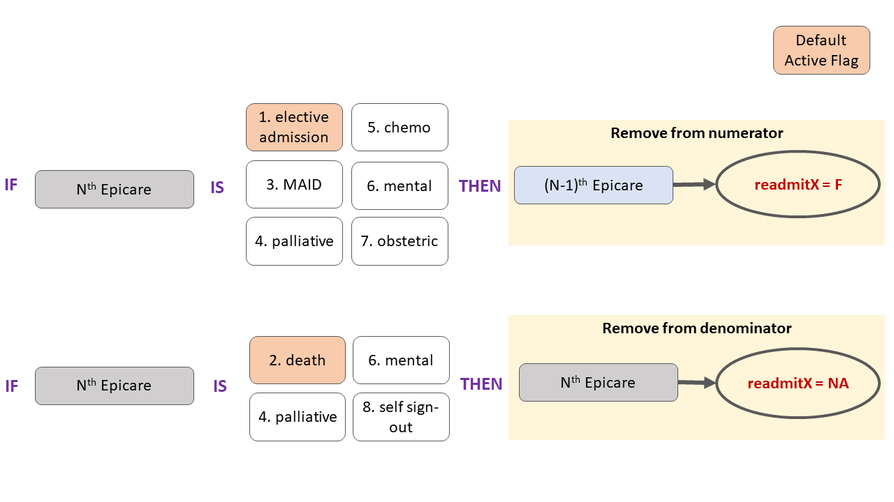
Flag details
Disclaimer: all the examples (focus on red text in
tables) below are mock final outputs of readmission.R
Elective flag
- An episode is elective if its admit_category is ‘L’
- An episode of care is considered elective if the FIRST encounter of that episode is elective (admit_category = ‘L’)
- An episode with elective admissions is removed from the numerator
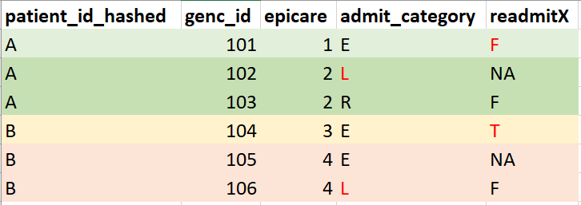
Death flag
- An episode ends with death if this episode has discharge as death (DAD Discharge Disposition Code = 07, 72, 73, 74)
- If the index admission results in death, there cannot be any readmission. Therefore, episodes of care with death are excluded from the denominator (reamitX=NA)
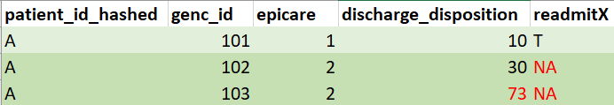
MAID flag
- Rationale for exclusion: MAID (medical assistance in dying) is planned and doesn’t reflect quality of care
- After 2018-04-01: An episode is MAID if its discharge disposition=73
- Before 2018-04-01: An episode is MAID if ANY genc_id of an epicare has discharge disposition=7 AND all 3 records of drugs (1st drug lets patient relax, 2nd drug stops heart beat, 3rd drug stops brain function; indicated by intervention_codes loaded)
- If an epicare has ANY encounter with MAID, it is not considered to be a true readmission and is removed from numerator.
- Note: If death = T, the epicare with MAID (which results in death) is additionally removed from the denominator. If death = F, the epicare with MAID is kept in the denominator. The general recommendation is to set death to T if MAID is T.
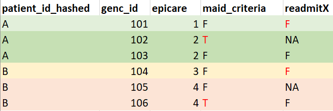
self sign-out / LAMA flag
- Rationale for exclusion: self sign-out doesn’t reflect physicians’ decisions to discharge and doesn’t reflect quality of care
- When LAST encounter of episode of care has discharge disposition = self sign-out (i.e. LAMA - left against medical advice: 61, 62, 65, 66, 67), the episode is removed from denominator to avoid attribution of potential readmission to physician
- Note: While self sign-out is excluded based on CIHI definition, GEMINI DB doesn’t capture different physician practices or philosophies regarding self sign-out (eg. Amol never codes self sign-out since he believes it’s patients’ right to leave on their own), or self sign-out information only recorded on paper.
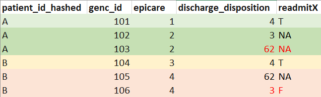
palliative flag
- Rationale for exclusion: palliative care is not acute care and can be scheduled to some extent, therefore, it doesn’t reflect quality of care
- An episode is palliative care if it has diagnosis code of (ICD-10-CA: Z51.5) as type MRDx
- When an episode of care includes ANY encounter with palliative care as most responsible discharge diagnosis, it is removed from numerator and denominator
chemo flag
- Rationale for exclusion: same as palliative flag
- An episode has chemotherapy if it has diagnosis code of (ICD-10-CA: Z51.1) as type (M), (1), (C), (W), (X) or (Y)
- When an episode of care (epicare) includes ANY encounter with chemotherapy, the entire epicare is considered as a chemotherapy episode.
- Readmission with chemotherapy is not considered a true readmission, and it is removed from numerator.
mental health flag
- Rationale for exclusion: same as palliative flag
- An episode is mental health if it falls under MCC=17
- When an episode of care includes ANY encounter with a mental health diagnosis, it is removed from numerator and denominator
obstetric delivery
- Rationale for exclusion: same as palliative flag
- An episode is obstetric delivery if it has diagnosis codes of (ICD-10-CA: O10–O16, O21–O29, O30–O37, O40–O46, O48, O60–O69, O70–O75, O85–O89, O90–O92, O95, O98, O99 with a sixth digit of 1 or 2; or Z37 recorded in any diagnosis field)
- Episodes of care that have ANY encounter with obstetric delivery are not considered a true readmission, and are therefore removed from numerator
Practical examples & special scenarios
This flow chart provides an overview of how readmission calculations can be customized for different research purposes. Depending on the research context, you may be able to use the derived readmission variables in the DB (see Section 3.1). Alternatively, you can run the readmission function with customized CIHI flags (Section 3.2), customized readmission window (Section 3.3), and/or a restricted readmission cohort (Section 3.4):
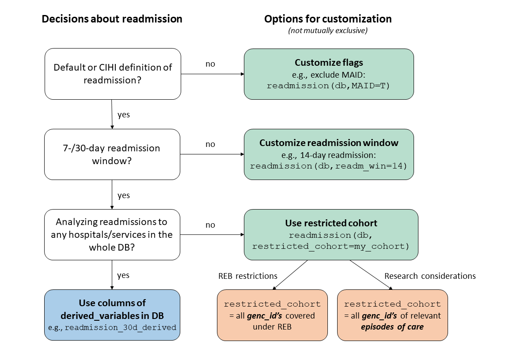
Using derived variables in DB
When to use:
- To get default/CIHI definition of 7-/30-day readmission, including all readmissions to any GEMINI hospital & to any medical subservice
How to use: Query the derived_variables
table, which contains the two most commonly used definitions of 7- and
30-day readmission:
- Default definition of readmission (excluding elective readmissions
and death):
readmission_7d_derived/readmission_30d_derived - CIHI definition of readmission (all exclusion flags, see Section 2):
readmission_7d_derived_cihi/readmission_30d_derived_cihi
Example: 7-day readmission rates of patients at phase-1 sites:
# get derived readmissions for phase-1 sites
readm <- dbGetQuery(db, "SELECT readmission_7d_derived FROM derived_variables
WHERE hospital_id IN ('SMH', 'SBK', 'UHNTW', 'UHNTG', 'MSH', 'THPC', 'THPM');")
mean(readm$readmission_7d_derived, na.rm = T)Other examples:
- MPR/OPR readmission rates
- Descriptive analyses of general readmission rates
- Comparing overall readmission rates of patients with certain diagnoses/treatments
- …
Note: The derived variables are based on the entire GEMINI DB. That is, they consider readmissions to any medical service at any GEMINI hospital. For that reason, they reflect overall/general readmission rates, which is a common variable of interest in many research projects.
However, there may be cases where you need to run the
readmission function on a subset of the database by using
the restricted_cohort argument (see Section 3.4).
Customizing CIHI flags
The derived variables in the DB only provide readmission values for the default & CIHI definitions of readmission, which are the most common definitions used in GEMINI research projects/reports. However, if another definition is required for specific research purposes, users can specify customized CIHI flags by setting each of the 8 CIHI flags to either TRUE or FALSE (see Section 2 for details). For example, run this code to exclude MAID (in addition to excluding elective admissions & death which are set to TRUE by default):
readmission(db, MAID=T)Specifying custom readmission window
By default, the readmission function only calculates 7-
and 30-day readmission. Users can provide an additional input argument
readm_win that contains any readmission window(s) of
interest (in days).
Example: Get 14-, 90-, and 180- day readmission.
readm <- readmission(db, readm_win = c(14, 90, 180)) # specify readmission windows in daysAll readmission windows should be provided as positive integers. Otherwise, the function will exit with an error message.
Note: Large readmission windows can lead to the exclusion of a high percentage of encounters at the end of the data availability timeline. This is because the function can only calculate readmissions for patients whose index encounter was prior to the buffer period. The buffer period depends on the length of the readmission window (e.g., 14/90/180 days) + an additional 30 days (see Section 1.2.2). Therefore, the buffer period is longer for large readmission windows, which can lead to the exclusion of many patients. This is especially problematic if the cohort of interest is towards the end of the data availability timeline (e.g., 2021-2022 data).
The function will show the following warning if more than 25% of the cohort are excluded due to the buffer period and/or due to the CIHI flags:
# Example of readmission rates for data from June 2021, resulting in a high % of encounters in the buffer period
readm <- readmission(db, restricted_cohort = admdad[ymd_hm(discharge_date_time) >= "2021-06-01 00:00",])#> Warning: Up to 41.3% of episodes of care have been removed from the denominator. This can be due to
#> 1) some CIHI flags (death/palliative/mental/signout) or
#> 2) removal due to the buffer period, which is 30 days + readmission window.
#> The removal due to the buffer period was 20.5%/33.4% for 7/30-day readmission.
#> Readmission rate estimates might be unreliable! Please consider re-calculating
#> readmission rates with shorter readmission windows or with a larger cohort.Running readmission function with
restricted_cohort
You can run the readmission function on a subset of the
DB providing an optional restricted_cohort input. There are
2 main reasons to restrict the cohort:
- If the REB protocol for your research project does not cover all encounters in the DB, or
- If you only want to analyse readmissions to certain hospitals/subservices due to a specific research question.
In both cases, the restricted_cohort should be provided
as a data.table containing a genc_id column
with all relevant encounters. If you use restricted_cohort
due to REB considerations, the restricted_cohort should
include all genc_ids that are covered under the REB (see Section 3.4.1 for details). By
contrast, if you want to filter the cohort due to a specific research
question, it is recommended to filter by episodes of care in order to
keep all linked transfers in the DB (see Section 3.4.2 for details).
Important: Running the readmission
function with restricted_cohort means that only the
encounters included in the restricted cohort will be used to derive
episodes of care and readmissions. All other encounters are excluded
from all computations.
A warning message will be shown when the
restricted_cohort argument is provided to notify the user
that all computations in the readmission function
(including the internal call to episodes_of_care) are
limited to the provided cohort. Please carefully consider if using a
restricted_cohort is appropriate/necessary in your case!
You can ignore the warning message if you are confident that a
restricted_cohort is required and you are sure you built
your restricted_cohort correctly (based on
genc_ids for REB scenarios vs. based on
epicares for other scenarios).
#> Warning: Note: Based on the user input, epicares will be computed solely based
#> on the user specified cohort, instead of the default method. The default method
#> computes epicares based on all available data in GEMINI database and is
#> recommended.Restricting the cohort due to REB protocol
When to use:
- When the REB protocol of your study does not cover all encounters in the DB
How to use:
- Provide a
restricted_cohortargument that includes allgenc_idscovered by the REB
Example: The REB protocol of your research project
only covers GIM encounters from 5 hospitals. In this case, it is
important to ensure that only those encounters are included in the
readmission function, while all other encounters in the DB
should be ignored.
# note: users needs to define their own GIM_cohort table based on the criteria they want to use to define GIM encounters
readm <- readmission(db, restricted_cohort = GIM_cohort[hospital_num %in% c(101,102,103,104,105),]) The resulting readmission rates will only include readmissions from
and to GIM services at the 5 hospitals that were included. Note that
those results may be less reliable than readmissions derived based on
the whole DB due to a loss of information about transfers to
hospitals/subservices that are not included in the
restricted_cohort. Specifically, the
readmission function internally calls the
episodes_of_care function, which inherits the same
restricted_cohort that was provided to the
readmission function. Therefore, any encounters that are
not part of the restricted_cohort are excluded from both
the reamdission calculations and the generation of episodes of
care.
Note: If you only want to calculate episodes of care
(without calculating readmissions) for a cohort with REB restrictions,
you can also run the episodes_of_care function in isolation
and provide a restricted_cohort input to ensure your
analyses are compliant with the REB. For example, to derive episodes of
care for GIM encounters at 5 hospitals:
# note: users needs to define their own GIM_cohort table based on the criteria they want to use to define GIM encounters
epicares <- identify_epicare(db, restricted_cohort = GIM_cohort[hospital_num %in% c(101,102,103,104,105),]) If you are unsure about which encounters are covered by your project’s REB protocol, please contact your manager!
Restricting the cohort due to research question
When to use:
- To calculate readmissions to specific hospitals/subservices (e.g., readmission to GIM only)
- To include/exclude certain encounters from readmission calculation due to research context (e.g., readmission with specific Dx)
How to use:
To calculate readmission rates that only consider readmissions to
certain hospitals/subservices/encounters, you can run the readmission
function using a restricted_cohort. While restricting the
cohort due to REB considerations should be done by filtering strictly
based on genc_id (see above), restricting the cohort due to
specific research questions should be done based on episodes of care in
order to ensure that all linked transfers are considered in the
readmission calculations. Specifically, for all
hospitalizations of interest, all linked encounters of a given episode
of care should be included. Please carefully read the examples below to
gain a better understanding of how to create a
restricted_cohort for research purposes.
Example 1: Calculating how frequently GIM patients are readmitted to GIM services:
In order to analyze readmissions of GIM patients to GIM services, the
restricted_cohort should include all
encounters of all episodes of care that have at least one GIM
encounter. That is, even non-GIM encounters should be included as long
as they are associated with the same epicare as the GIM
encounters of interest. This ensures that all linked transfers are
included in the readmission calculation, which minimizes the chance of
encounters being inaccurately labelled as readmissions due to missing
transfer information.
## Calculate epicares based on ALL encounters in DB (to ensure linked transfers are included)
epicares <- episodes_of_care(db)
## Identify all epicares that have at least 1 GIM encounter
# note: users needs to define their own GIM_cohort table based on the criteria they want to use to define GIM encounters
GIM_epicares <- epicares[genc_id %in% GIM_cohort$genc_id, 'epicare']
## Get all encounters associated with GIM epicares (keep all encounters of those epicares, even those without GIM to make sure all linked transfers are accounted for)
GIM_epicares_all_enc <- epicares[epicare %in% GIM_epicares$epicare, 'genc_id']
## Calculate readmissions to GIM (considering all linked transfers in DB)
GIM_readm <- readmission(db, restricted_cohort = GIM_epicares_all_enc)
## Get 7-day readmission rate of GIM patients to GIM
# note: numerator/denominator are based on unique GIM epicares, not GIM encounters (i.e., there may be several GIM encounters associated with a single GIM epicare, but those are only counted once; readmission is attributed to the last encounter within each GIM epicare)
mean(GIM_readm$readmit7, na.rm = T)The resulting readmission rates indicate whether there was ANY GIM
readmission for a given GIM patient within a 7-/30-day time window.
Those readmissions are not necessarily the first
readmission after the index epicare! For example, a GIM patient may have
had a non-GIM readmission after the initial epicare, which is ignored in
the calculation above. Therefore, interpretations about the causes for
readmission should be done carefully as there may be intermediate
epicares which readmissions could have been attributed to but were not
considered due to the use of a restricted_cohort.
Example 2: Calculating readmission rates of COVID
patients who are readmitted with a COVID
diagnosis. In this case, the
restricted_cohort should include all episodes of care that
have ANY encounter with a COVID diagnosis. As in example 1, all linked
encounters (even those without COVID diagnosis) should be included to
make sure that all available transfer information is used in the
readmission calculations.
## Get all encounters with COVID diagnosis
COVID_enc <- ipdiagnosis[grepl('^U07',diagnosis_code),'genc_id']
## Calculate epicares based on ALL encounters in DB (to ensure linked transfers are included)
epicares <- episodes_of_care(db)
## Identify all epicares that have at least 1 COVID encounter
COVID_epicares <- epicares[genc_id %in% COVID_enc$genc_id, 'epicare']
## Get all encounters associated with COVID epicares (keep all encounters of those epicares, even those without COVID diagnosis to make sure all linked transfers are accounted for)
COVID_epicares_all_enc <- epicares[epicare %in% COVID_epicares$epicare, 'genc_id']
## Calculate readmissions with COVID diagnosis (considering all linked transfers in DB)
COVID_readm <- readmission(db, restricted_cohort = COVID_epicares_all_enc)
## Get 30-day readmission rate of COVID patients, only counting readmissions that also have a COVID diagnosis
# note: numerator/denominator are based on unique COVID epicares, not COVID encounters (i.e., there may be several COVID encounters associated with a single epicare, but those are only counted once; readmission is attributed to the last encounter within each COVID epicare)
mean(COVID_readm$readmit30, na.rm = T)The resulting readmission rates indicate whether patients with COVID had ANY readmission with a COVID diagnosis within a 7-/30-day time window. Those readmissions are not necessarily the first readmission after the index epicare with COVID diagnosis! That is, there may have been intermediate, non-COVID epicares, that were ignored in the readmission calculations.
Note: In the examples above, only the
highlighted italic parts of each sentence
(which specify where patients are readmitted to) necessitate using
restricted_cohort. If you only want to filter your cohort
according to where patients are readmitted from, you
should NOT use the restricted_cohort
argument. Instead, simply query the derived variables for your cohort of
interest (see example in Section
3.1) to make sure you are including readmissions to all
hospitals/medical subservices.
Other special scenarios:
There may be more complex scenarios where the inclusion criteria for
index admissions (“readmission from”) are different from the inclusion
criteria for readmission encounters (“readmission to”). For example, you
might want to analyze readmission rates of surgery patients who are
readmitted to GIM. In this case, your restricted_cohort
should include all epicares that meet the criteria for index admissions
plus any epicares that meet the criteria for readmissions. You will need
to use several steps to create your restricted_cohort:
- Select all encounters of episodes of care that meet the criteria for index admissions: In the example scenario, include all encounters of epicares that have at least one surgery encounter. If you only want to consider readmissions to GIM, only include a single surgery episode of care per patient in order to avoid that subsequent surgeries are counted as readmissions.
- Select all encounters of episodes of care that meet the criteria for readmissions: In this example, to qualify as a GIM readmission, include all encounters of epicares that a) occurred after the index surgery admission and b) had at least one GIM encounter. Note: the implication of this step is that any intermediate non-GIM epicares are ignored.
- Combine all encounters from step 1 & 2 to create the
restricted_cohortof interest. - Run the readmission function with
restricted_cohort. - Calculate readmission rates: Filter the output of the
readmissionfunction based on your index admissions (cohort created in step 1) in order to get readmission rates of surgery patients to GIM. This step is important to avoid that any admissions following GIM epicares (e.g., GIM to GIM readmissions or GIM to surgery readmissions) are included in the readmission rates.
These steps are meant as a general guideline, but you may need to
consider additional aspects for a given research project. Please make
sure you carefully consider the implications of the decisions you make
when building your restricted_cohort. You will also need to
consider if any additional REB restrictions apply, in which case the
restricted_cohort should be filtered based on REB
considerations first before applying any additional inclusion steps.